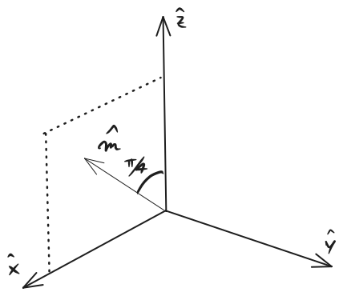
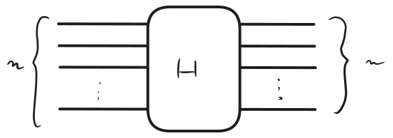

Qubits carried out by the operator:
H ≡ 1 2 ( 1 1 1 − 1 ) H \equiv \frac{1}{\sqrt{2}} \begin{pmatrix}1 &1 \\ 1 & -1\end{pmatrix} H ≡ 2 1 ( 1 1 1 − 1 ) In terms of one qubit unitaries :
H = 1 2 ( 1 1 1 − 1 ) = e i π U m ^ ( π ) H=\frac{1}{\sqrt{2}}\left(\begin{array}{cc}1 & 1\\
1 & -1\end{array}\right) = e^{i\pi}U_{\hat{m}}(\pi) H = 2 1 ( 1 1 1 − 1 ) = e iπ U m ^ ( π ) m ^ = 1 2 ( 1 , 0 , 1 ) \hat{m} = \frac{1}{\sqrt{2}}(1,0,1) m ^ = 2 1 ( 1 , 0 , 1 ) The corresponding angle is depicted in the figure above.Pauli operators ):
H ∣ 0 ⟩ = ∣ + ⟩ H\ket{0} =\ket{+} H ∣ 0 ⟩ = ∣ + ⟩ H ∣ 1 ⟩ = ∣ − ⟩ H\ket{1} =\ket{-} H ∣ 1 ⟩ = ∣ − ⟩ H 2 = I d 2 H^2 = \id_2 H 2 = Id 2 In terms of Computational basis :
∣ x ⟩ ↦ H 1 2 ( ∣ 0 ⟩ + ( − 1 ) x ∣ 1 ⟩ ) \ket{x}\overset{H}{\mapsto}\frac{1}{\sqrt{2}}\left(\ket{0} + (-1)^{x}\ket{1}\right) ∣ x ⟩ ↦ H 2 1 ( ∣ 0 ⟩ + ( − 1 ) x ∣ 1 ⟩ ) Global Hadamard gate

We are working in the Computational basis N ≡ 2 n N\equiv 2^n N ≡ 2 n
∣ x ⟩ ↦ 1 N ∑ y ( − 1 ) x ⋅ y ∣ y ⟩ \ket{x}\mapsto\frac{1}{\sqrt{N}}\sum_y(-1)^{x\cdot y}\ket{y} ∣ x ⟩ ↦ N 1 y ∑ ( − 1 ) x ⋅ y ∣ y ⟩ ∣ 0 ⟩ ⊗ n ↦ ∑ y ∣ y ⟩ N \ket{0}^{\otimes n} \mapsto \sum_y\frac{\ket{y}}{\sqrt{N}} ∣ 0 ⟩ ⊗ n ↦ y ∑ N ∣ y ⟩ Qudit Hadamard
H d ∣ j ⟩ = 1 d ∑ i = 0 d − 1 ω i j ∣ i ⟩ , j ∈ { 0 , 1 , 2 , … , d − 1 } , ω : = e 2 π i / d . \begin{gathered}
H_d|j\rangle=\frac{1}{\sqrt{d}} \sum_{i=0}^{d-1} \omega^{i j}|i\rangle, j \in\{0,1,2, \ldots, d-1\}, \\
\omega:=\mathrm{e}^{2 \pi \mathrm{i} / d} .
\end{gathered} H d ∣ j ⟩ = d 1 i = 0 ∑ d − 1 ω ij ∣ i ⟩ , j ∈ { 0 , 1 , 2 , … , d − 1 } , ω := e 2 π i / d . Transformation acting on two memory registers